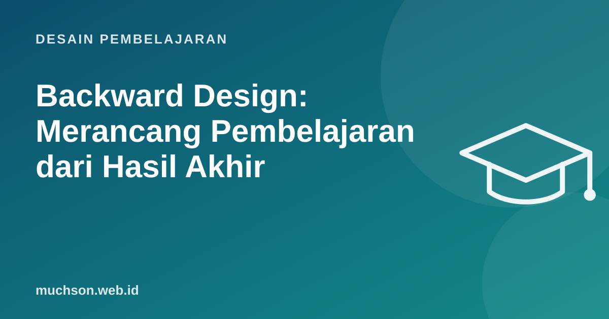

Beranda › Artikel › Desain Pembelajaran
Desain PembelajaranBackward Design: Merancang Pembelajaran dari Hasil Akhir
Cara paling umum menyusun pelajaran adalah dari depan: buka buku, urutkan bab, pikirkan aktivitas, lalu di akhir membuat ujian. Grant Wiggins dan Jay McTighe dalam Understanding by Design (1998) mengusulkan kebalikannya: tentukan dulu hasil akhir dan buktinya, baru rancang aktivitas. Kedengarannya sederhana, tetapi dampaknya besar.

Dua jebakan perencanaan dari depan
Tiga tahap backward design
Tahap 1: hasil yang diinginkan
Bedakan tiga lapis: hal yang perlu diketahui sekilas, hal yang penting diketahui dan dilakukan, dan pemahaman yang bertahan lama (enduring understanding), yaitu gagasan besar yang tetap berguna lama setelah detailnya terlupakan. Tambahkan pertanyaan esensial yang memancing diskusi, misalnya "Kapan data cukup untuk mengambil keputusan?"
Tahap 2: bukti
Utamakan tugas kinerja: peserta menerapkan pemahaman pada situasi realistis. Lengkapi dengan kuis, observasi, dan refleksi.
Tahap 3: rencana pembelajaran
Baru sekarang memilih materi, urutan, dan aktivitas. Setiap aktivitas harus menjawab: membantu peserta menghasilkan bukti di tahap 2 atau tidak?
Contoh: modul retensi pelanggan 1 hari
| Tahap | Isi |
|---|---|
| Pemahaman bertahan lama | Mempertahankan pelanggan lebih murah daripada mencari pelanggan baru, dan tanda risiko biasanya muncul jauh sebelum pelanggan berhenti. |
| Pertanyaan esensial | "Sinyal apa yang menunjukkan pelanggan mulai menjauh?" |
| Yang bisa dilakukan | Menghitung churn, membaca data pemakaian, menyusun rencana tindakan. |
| Tugas kinerja (bukti) | Diberi data 30 akun simulasi, peserta memilih 5 akun berisiko dan menulis rencana tindakan; dinilai dengan rubrik. |
| Bukti lain | Kuis cepat rumus churn, refleksi tertulis di akhir sesi. |
| Aktivitas | Studi kasus, latihan hitung bersama, simulasi panggilan pelanggan, umpan balik antar peserta. |
Template perencanaan
Bila aktivitas favorit Anda tidak membantu peserta menghasilkan bukti di tahap 2, pertimbangkan untuk memangkasnya, seberapa pun menariknya.
Tanya jawab
Apa bedanya dengan ADDIE?
Apakah cocok untuk sekolah dan pelatihan korporat?
Bagaimana bila kurikulum sudah ditentukan?
Sumber dan bacaan lanjut
- Vanderbilt Center for Teaching: Understanding by Design
- Wiggins dan McTighe: Understanding by Design, 2nd ed. (ASCD)
- Menulis tujuan pembelajaran terukur ABCD (artikel terkait)